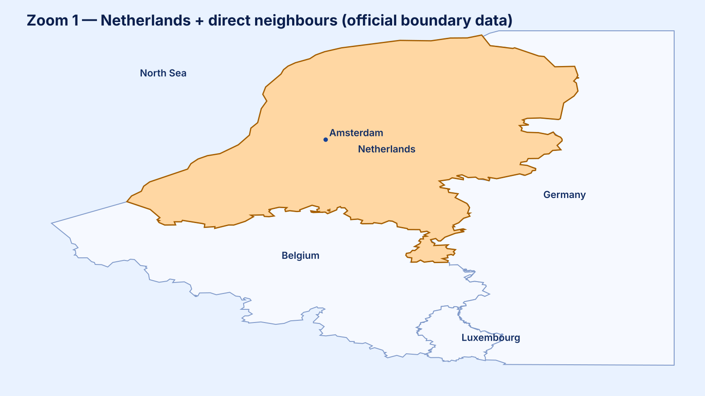
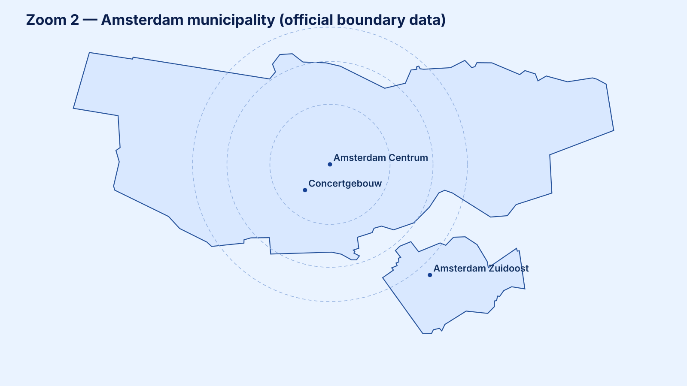
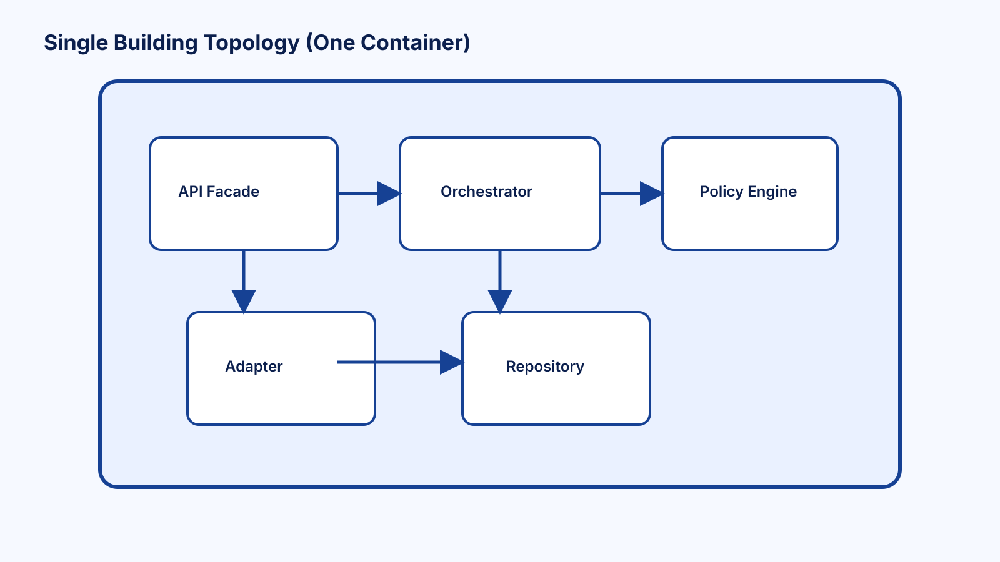
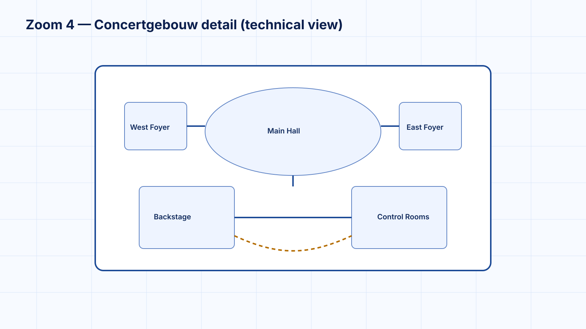

Infrastructure map: The Netherlands in its external context.
Question: What surrounds and connects to our system?
Infrastructure map: Main infrastructure domains inside the Netherlands.
Question: What are the major parts inside the system, and how do they connect?
Infrastructure map: Inside one infrastructure domain.
Question: How is one major part structured internally?
Infrastructure map: Engineering blueprint / construction specification.
Question: How is it built in exact detail?




Draw the system as one whole. Show surrounding actors, external and partner systems, cross-boundary connections, and the system boundary.
Netherlands analogy: citizens, businesses, travelers, Belgium/Germany/EU systems, ports, airports, cross-border rail/highways, energy imports, internet backbone links.
Map major internal domains and communication paths between them.
Infrastructure examples: road network, rail network, energy grid, water management, telecom, ports/airports, control centers, emergency network, data centers.
Software equivalents: apps, services, databases, message brokers, caches, gateways, platform services.
Inside rail network: stations, tracks, switches, signals, control rooms, timetable systems, depots, ticket gates, power sections.
Inside road network: highways, junctions, tunnels, bridges, traffic lights, dynamic signage, sensors, incident response units.
Software: controllers, adapters, domain logic, repositories, validators, event publishers, internal modules.
Bridge materials, track gauge, signal wiring, sensor configuration, traffic-light control logic, PLC programs, concrete composition, bolt sizes, safety protocol implementation.
Software: classes, functions, methods, interfaces, database queries, config files, implementation code.
Simple request-response interaction.
Consumer asks exactly for the data it needs.
Continuous two-way updates.
External system notifies us when something happens.
Efficient internal service-to-service communication.
Strict, formal, enterprise or legacy integration.